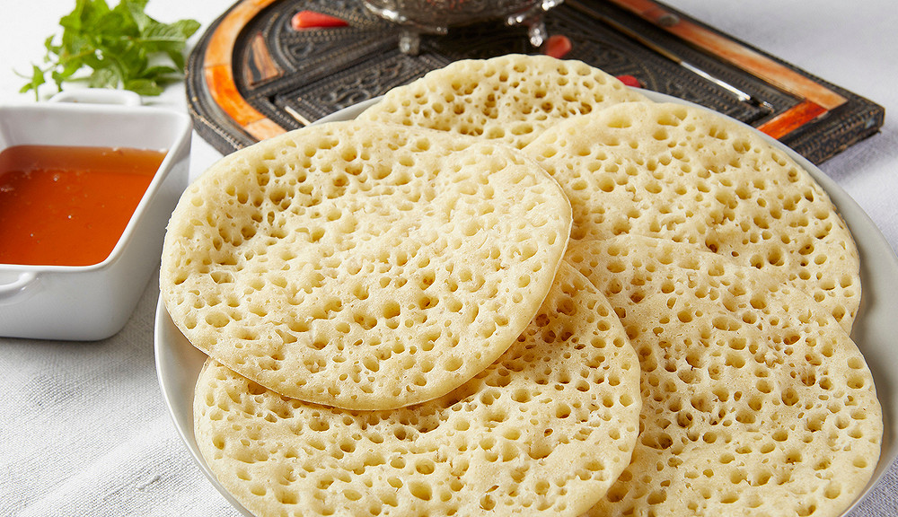

Relax your stomach with crepes as light as they are sweet @ Baghrir .

Description
"Pancakes, cooked on a griddle or baghrir, are a delicious, airy, and light treat that is easily prepared and is a culinary tradition in the Maghreb countries."
The thing with this dessert is that it pairs wonderfully with green tea, and when mixed with buckwheat honey, it becomes a deadly combo.
Ingredients
- Semolina (100 g)
- Cornstarch (Maïzena) (2 cups)
- Warm water (50 cl)
- Yeast packet (1 px)
- Granulated sugar (1 cup)
- Salt (1 pinch)
Steps
-
Take out the blender and pour all the ingredients except the baking powder. Mix for at least 5 minutes, until the batter becomes absolutely homogeneous, smooth, and lots of small bubbles appear on the surface. You can also perform this operation with a bowl and a mixer or blender; it takes the same amount of time.
-
Now, add the baking powder to the blender and mix for a few more minutes to ensure a well-blended mixture. The bubbles will have completely disappeared, but the batter will be smooth, a sign that it's almost ready.
-
Let the baghrir batter rest for a good fifteen minutes or more if you're patient: the pancakes with a thousand holes will be even better and lighter.
-
Take a non-stick pan and heat it without adding any fat over medium heat.
-
When the pan is hot, pour the batter in the style of Breton pancakes and cook it for a few minutes. The pan-cooked baghrir only cooks on one side and is ready when it is covered with a thousand small holes.
-
Serve the pan-cooked baghrir with butter, sugar, honey, or even with a drizzle of olive oil for a savory version!
Now with that and the tea you're SET UP!
Another slices ? or
Return Home